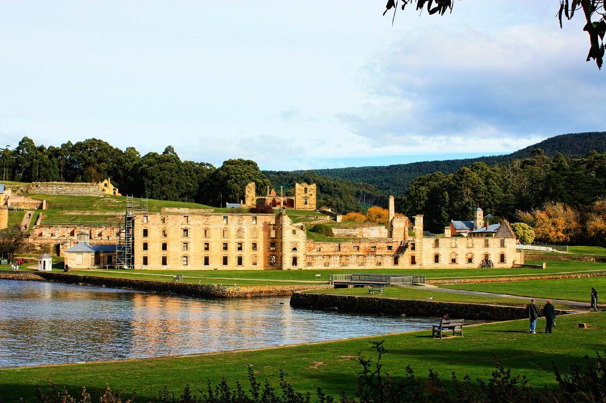
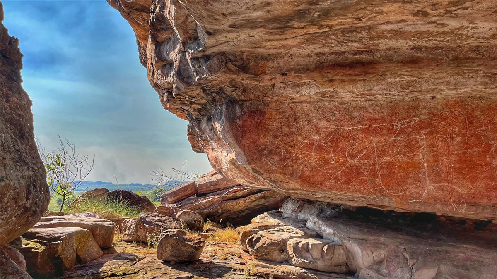

Designed by Danish architect Jørn Utzon and opened in 1973 after years of groundbreaking engineering on Bennelong Point, its sail-like shells transformed Sydney’s harbor skyline. Standing on traditional Gadigal land, it represents modern Australia’s bold artistic spirit.

Port Arthur Historic Site
Tasmania
Established in 1830 on a remote Tasmanian peninsula as an inescapable penal settlement for repeat British convicts, this sandstone complex housed thousands of men and boys under harsh discipline. Its ruins connect Australians to the convict origins of early society.

Kakadu Rock Art Sites
Northern Territory
Painted by Bininj and Mungguy Aboriginal ancestors for up to 20,000 years, these sandstone galleries depict native wildlife, X-ray spirit figures, and Creation stories. They represent one of Earth’s longest continuous historical records and an enduring bond between Indigenous Australians and Country.